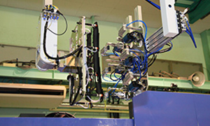

- HOME
- 成形
品質、コスト、納期。妥協のない、最適なプランをご提案します
当社では最新鋭の成型機を揃え、さらに生産方式のシステム化にも積極的に取り組み、各工程にさまざまな設備・装置を導入しております。
製造現場の自働化により、フレキシブルに稼働できる生産体制を構築。これまでに培った豊かな経験、そしてこうした最新技術との融合が、私たちの揺るぎない自信です。万全の体制を整え、高品質の維持はもちろん、コストダウンや迅速な納期対応にも努めております。
「あんなことをしたい」「これをどうにかできないか」
お客様の悩みを聞き取り、最適なプランを提案します。
- 技術力・開発力
- 製造力・現場力
- お客様の課題・ニーズ
一貫生産システムによる総合力で、
高品質・合理的コスト&納期でお客様のニーズをより的確に実現する
新技術・新製品を創出します。
―ニーズをより的確に実現する最適なプランを提案します―
あらゆるケースの試作に対応
当社では新製品の開発・設計から量産、出荷まですべての工程を一貫対応しております。製品サンプルの試作品をつくり、それを正確に検証する試作業務は、ものづくりに欠かせない大切な工程です。
試作は実際に製造の現場となる、量産工場で行うことにこそ意味があるもの。三光化成では開発から手がける新製品・新技術はもちろん、お客様による金型持ち込みの試作や、量産化へ向けたご相談にも柔軟に対応しております。「既存の金型を使用したい」という場合も、ぜひご相談ください。当社の技術と設備を駆使し、正確な試作・評価をさせていただきます。
柔軟で安定した量産体制
試作後の大量生産も当社にお任せください。充実の設備と確かな技術を備えた当社ならではの製造力・現場力で、製品の安定した量産を実現いたします。
三光化成グループの成型機
現在各工場に導入している成型機の総数は500台以上。15tの小型精密成型機から850tの大型成型機まで幅広い設備を揃えております。そして、その設備を扱うのは当社が誇るプロの「作り手」たち。射出成形技能検定特級3名、1級16名、2級118名をはじめ、確かな経験と技術を持った「人」のチカラで、高品質なものづくりを実現。一般成型はもちろん、高機能樹脂成形、2色成形、フープ成形、ロータリー成形、インサート・アウトサート複合成形、クリーンルーム成形、薄肉成形など特色ある成形にも対応可能です。
※表は左右にスクロールして確認することができます。
| 三光化成グループの成形機※2019年10月1日時点／グループ全体 | |||||||
|---|---|---|---|---|---|---|---|
| 拠点 | 15t ～18t | 30t ～70t | 75t～110t | 130t ～220t | 250t～350t | 400t～850t | 計 |
| 国内 | 8台 | 60台 | 109台 | 73台 | 32台 | 17台 | 299台 |
| 海外 | 8台 | 55台 | 95台 | 47台 | 11台 | 0台 | 216台 |
| 合計 | 16台 | 115台 | 204台 | 120台 | 43台 | 17台 | 515台 |
製作例
これまでにお客様と共に創り出してきた、プラスチック成型品の事例の一部をご紹介します。
製作例
精密機構部品から外装品、OA、デジタル機器、電子、電装、IT、自動車、車載、衛生、化粧品、セキュリティー、鉄道、建材関連等
成形ライン・設備
自動インサート成形
当社では生産のシステム化・自働化に積極的に取り組んでおり、一部の工場では双腕型ロボットを導入しています。作業者が行っていた工程を双腕型ロボットが行うことで、さらなる生産性の向上につなげていきます。
-
量産成形ライン
-
850t成形
-
2色成形

-
ゲートカット機
-
成形機管理システム
クリーンルーム成形
ゲートカット機
-

設備ライン
三光化成では2種類の3Dプリンターを導入しており、そのうちの1つ金属3Dプリンターを活用し、自社で使用する治具や部品を製作しています。